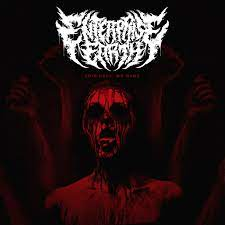

Here is a picture of one of my favorite black metal albums. It's Bathory's self-titled album.

Here is a picture of one of my favorite goth rock albums (it probably is my favorite). It's The Cure's 8th album.

Here is a picture of one of my favorite deathcore albums. It's Chelsea Grin's latest album (which was released in 2018, Chelsea Grin we want more music!!!)

Here is a picture of one of my favorite deathcore singles. It's was released in 2016.
Here is a picture of one of my favorite metalcore releases this year. It's Knocked Loose's latest album and it came out last month.

Here is one of my favorite deathcore EPs. It's Lorna Shore's latest release (every vocalist that has come and gone is legendary, but Will Ramos tops them all for me)

Here is one of my favorite black metal EPs. It's Hekseblad's first official EP. If you're interested, Hekseblad is Witcher-themed black metal.